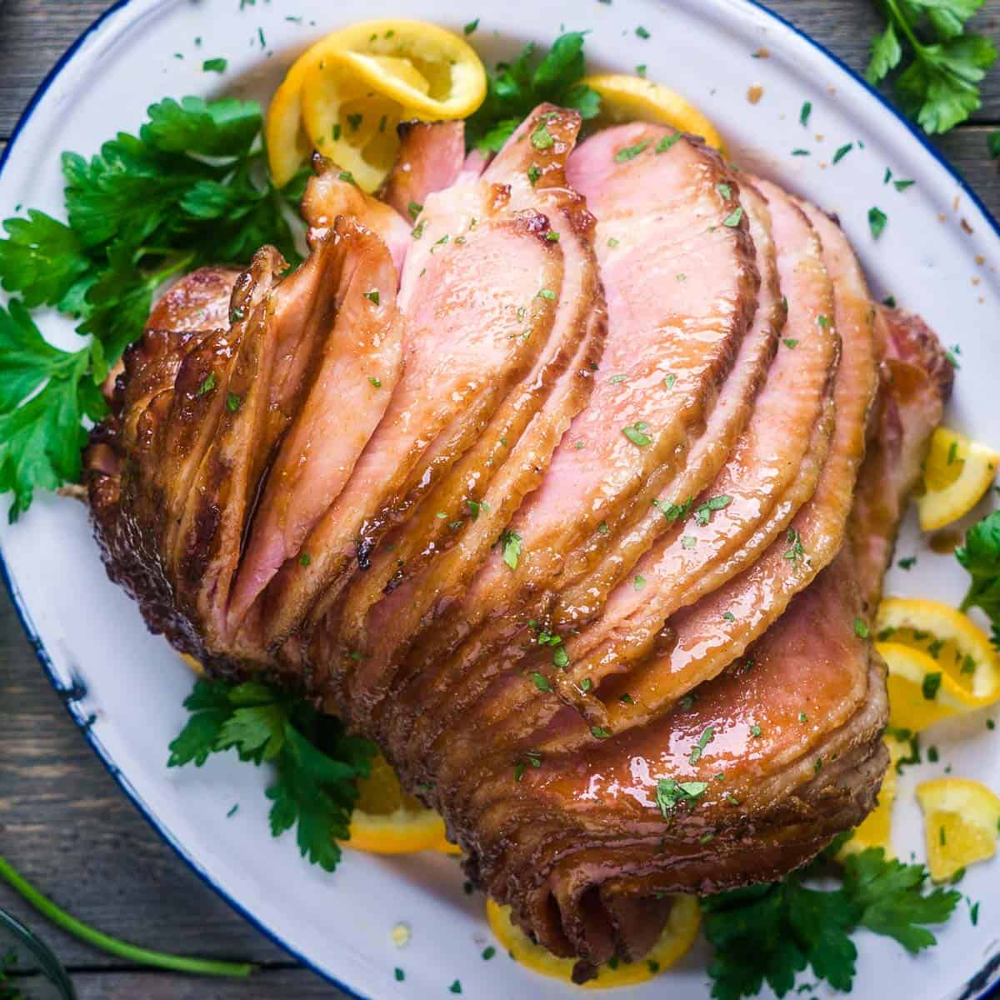

Ham

Description
This spiral ham is so juicy and tender that it will make you the best cook of the family.
Ingredients
- Spiral ham
- Brown sugar
- Navel orange
- Dijon mustard
- Apple cider vinegar
- Paprika and garlic powder
- Sea salt
Steps
- Preheat oven to 325 degrees Fahrenheit and position the oven rack low enough so the ham doesn't touch the oven components.
Remove all packaging and place ham face down on a foil-lined roasting pan. Cover and seal the pan with aluminum foil. Bake boneless ham 10-12 minutes per pound or bone-in ham about 15 minutes per pound.
- While the ham is baking, make the orange glaze by simmering brown sugar, orange juice and zest, mustard, vinegar, paprika, garlic powder, and salt in a small saucepan over medium heat, whisking as needed. The glaze will thicken as it cools, and can be used warm or at room temperature.
- Carefully remove ham from the oven. Increase oven temperature to 400 degrees Fahrenheit. Carefully uncover the ham and drain excess liquid from the roasting pan. Brush glaze over the ham surface until well-coated.
- . Bake the glazed ham uncovered for 20 minutes, or until the internal temperature reads 140 degrees Fahrenheit on a quick read thermometer
- Transfer ham to a serving dish, garnish with orange slices and fresh parsley, and rest it for about 10 minutes before serving.
Please note that this recipe is taking from The Kitchen Girl. It was used to complete the Odin Project assignment